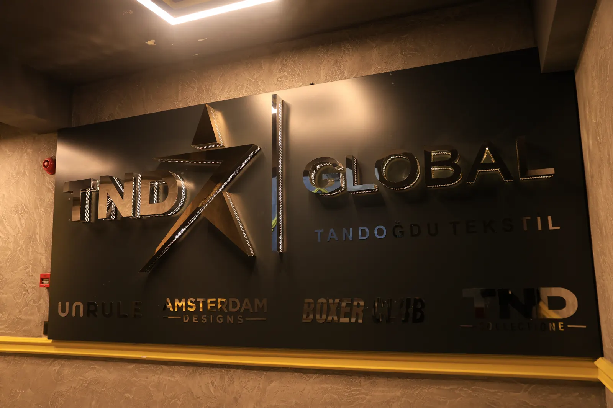

İLETİŞİM
İyi bir ürün
bir sohbetle başlar.
Tasarımınızı, görsel referansınızı veya üretim sorunuzu paylaşın. Nasıl hayata geçirebileceğimizi birlikte değerlendirelim.
TANDOĞDU TEKSTİLFABRIC · DEVELOPMENT · PRODUCTION
BURADAN BAŞLAYIN
Aklınızdakini
bize anlatın.
Teknik dosyanız hazır olabilir ya da elinizde yalnızca bir görsel bulunabilir. İlk adım, ne yapmak istediğinizi, hedef tarihinizi ve hangi detayların önemli olduğunu anlamaktır.
01Ürünü veya referansı paylaşın
02Hedef tarihinizi söyleyin
03Kumaş ve üretim ihtiyaçlarını konuşun
Proje brifi hazırlayın
Doğrudan gönderim için iletişim bilgileri yayından önce eklenecek. Şimdilik bu form kopyalayabileceğiniz bir brif oluşturur.
